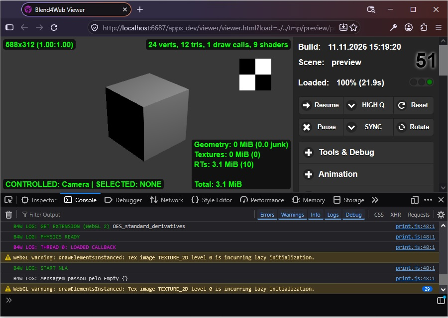
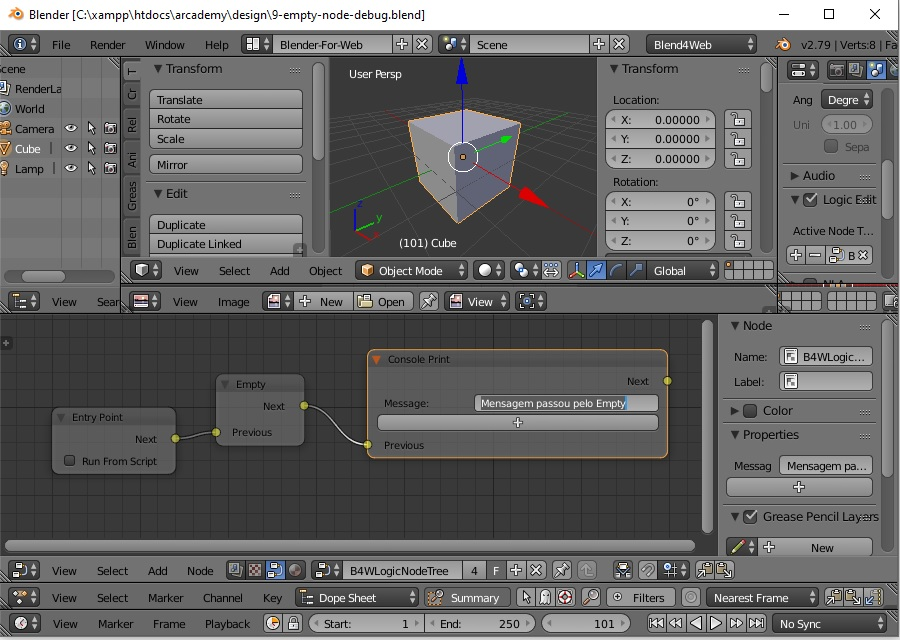

Neste Tutorial Adicionemos na Árvore de Node um Empty.
Você pode conferir o resultado deste tutorial, em algo semelhante a imagem abaixo:

Um Empty serve para organizar o Código uma Vez que este não tem outra função específica a não ser de passar um Node à outro, ligando nas pinagens de Previous para a de Next, Conectando dois Nós independentes.
Como você pode ver nessa imagem abaixo, o Inpetor de Código Web do Navegador mostrou a mensagem que estava no Campo do Nó de "Console Print". Mostrou a mensagem uma única vez, porque não usamos rerout nem outra forma de fazer com que a Mensagem seja exibida outras vezes.

O Nó de Empty organiza o Código e facilita o fluxo de Dados e Variáveis por entre os Nós de Entrada e de Saída.
Para Voltar ao Menu inicial: